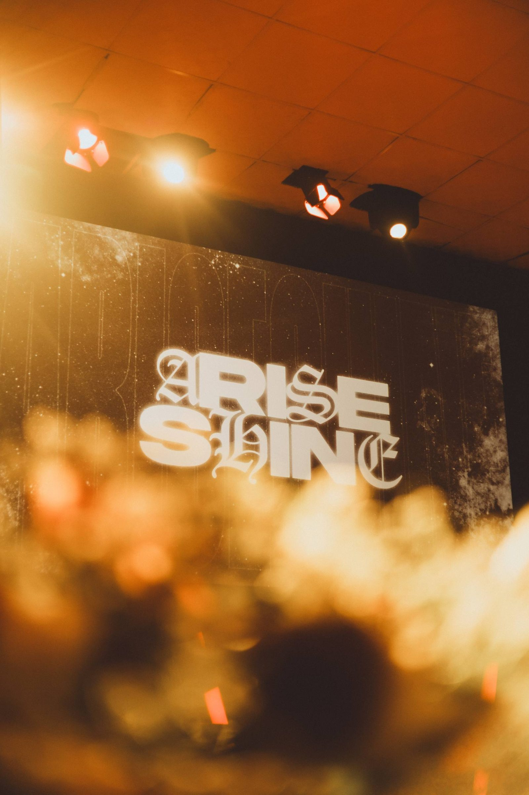
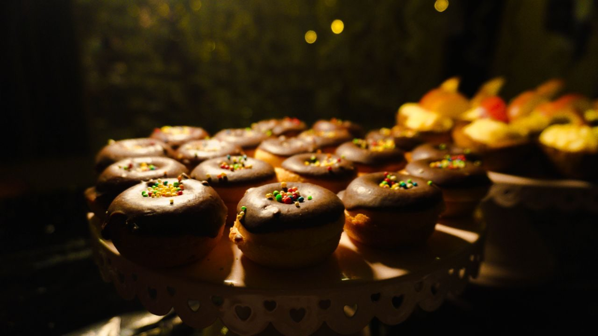
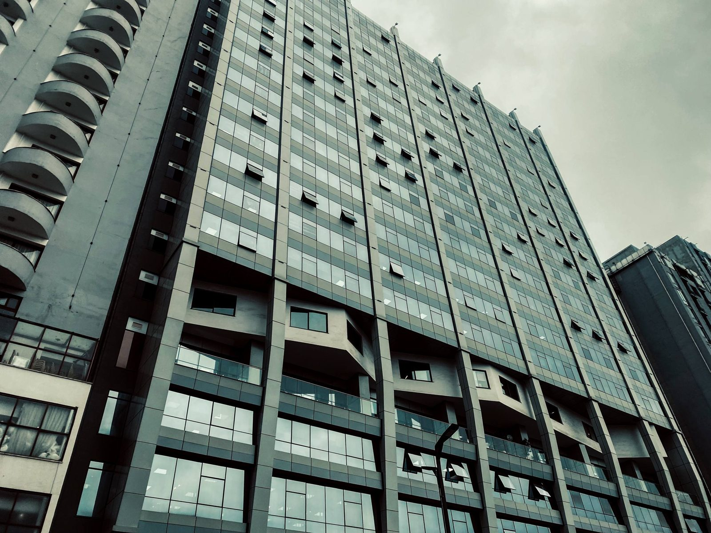
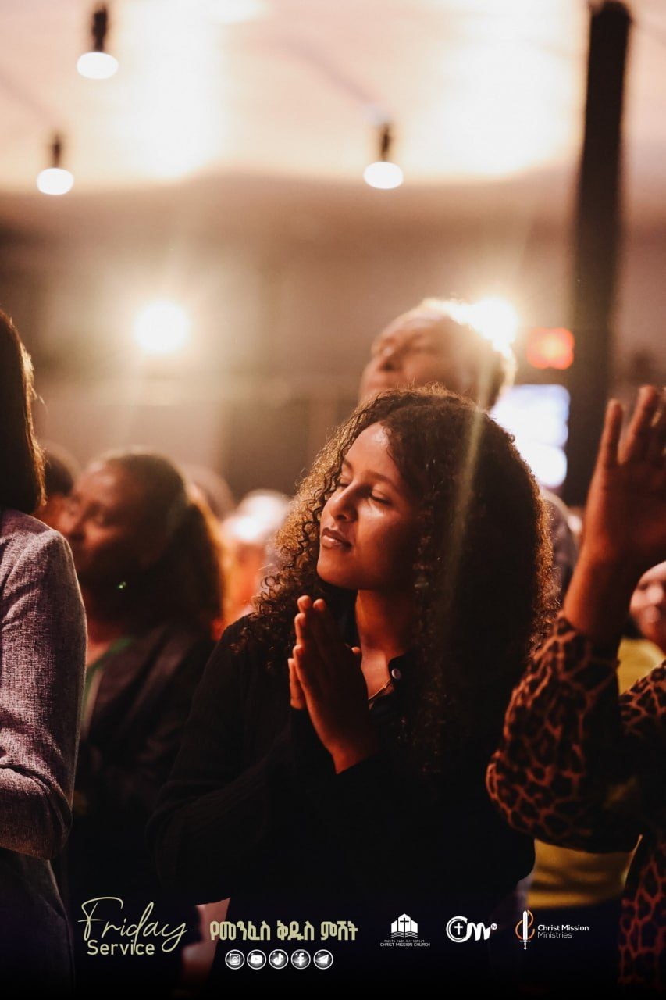

Moments
in motion.
Yohan Visuals captures desserts fresh from the bakery, the everyday architecture of Addis Ababa, and life at Christ Mission Church — real moments, honestly framed.
One eye for detail.
Some weeks it's the glaze on a tray of tarts, still warm from the kitchen. Other days it's the quiet geometry of a building against an Addis Ababa sky, or a congregation caught mid-prayer under stage light.
Every frame is shot where it happens — no studio, no staging, just paying close attention.
More about the work →Frames that
speak.
A preview across bakeries, the city, and church life. See the full portfolio on the Work page.


